Simulated annealing, local beam search, genetic algorithms and tabu search — how to keep improving a single solution when the state space is far too large to search in full.
Module 7 · Based on the course slides & Russell & Norvig, AIMA Chapter 4
Advanced Optimization ~60 mineΔE/TPrerequisites: Module 6 (Informed Search & A*), where hill climbing and heuristic evaluation were introduced. Local search is what you reach for when hill climbing alone keeps getting stuck.
Every search so far — BFS, DFS, A*, minimax — built a path from a start state to a goal, and the path itself was the answer. But for a huge class of problems the path is irrelevant: we only care about the final configuration. Where should eight queens sit so none attack? Which layout minimises wire length on a chip? What assignment of variables satisfies an equation? These are optimisation problems, and for them we use local search.
The trouble with plain hill climbing — always step to the best neighbour, never step down — is that it halts at the first peak it reaches, even if that peak is a mere local maximum. The four methods in this module are all ways to break out of local optima and keep searching toward the global one.
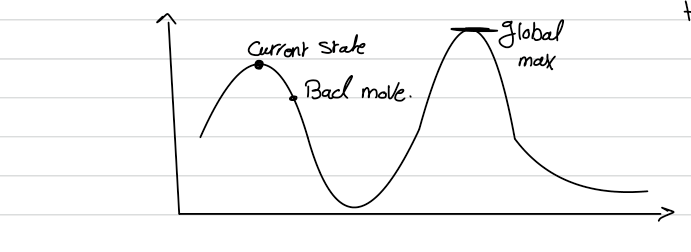
A hill-climbing algorithm that never moves downhill is incomplete — it can get stuck on a local maximum. A purely random walk — move to a random neighbour regardless of value — is complete but hopelessly inefficient. Simulated annealing combines the two: mostly climb, but occasionally allow a "bad" move, and gradually reduce how often and how badly you are willing to go downhill.
Annealing is the metallurgical process of heating a metal and cooling it slowly so its atoms settle into a strong, low-energy crystalline structure. Simulated annealing borrows the metaphor: a temperature parameter T starts high and is slowly lowered. Each time we cool, the probability of taking a bad move gets lower. Early on the search wanders freely (like a random walk); as it cools it behaves more and more like greedy hill climbing.
At each step, instead of picking the best neighbour, we pick a random neighbour and look at the change in objective value ΔE = next.VALUE − current.VALUE:
ΔE > 0 (the move improves the state) — always accept it. We are on the right path.ΔE ≤ 0 (a downhill move) — accept it only with probability eΔE/T, a number less than 1.That probability decreases exponentially with the "badness" of the move (the bigger the drop −ΔE, the less likely it is accepted) and also decreases as T falls (bad moves are common when hot, rare when cool).
Read the schedule as a cooling table: it hands out a temperature for each time step, starting high and shrinking toward zero.
| Time | Temperature T | Behaviour |
|---|---|---|
t₁ | 0.95 | Hot — downhill moves accepted readily (near random walk) |
t₂ | 0.90 | Cooling — still fairly exploratory |
t₃ | 0.85 | Bad moves becoming less likely |
| … | … | … |
tₙ | 0 | Frozen — no more changes possible; return the current state |
Once T reaches 0 the algorithm can no longer change — whatever state it is on is final, so if it froze on a local optimum it will not reach the goal. The theoretical guarantee is precise: if the schedule lowers T slowly enough, simulated annealing finds a global optimum with probability approaching 1. Cool too fast and you gamble. Simulated annealing is widely used in real optimisation such as VLSI chip layout and airline scheduling.
Simulated annealing keeps a single state. Local beam search keeps several. Instead of one current state it holds the k most promising nodes at once — the number k (also written B) is the beam width. At each level it expands all k nodes, gathers all their successors, and keeps only the best k of those to carry to the next level. The rest are discarded.
A heuristic search algorithm that examines a graph by extending the most promising nodes within a limited set. More than one node can be kept at each level — exactly k of them (the beam width). It is a middle ground between greedy best-first (which keeps everything on a frontier) and hill climbing (which keeps just one state).
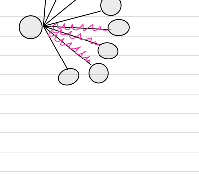
k) explores more and improves the result at the cost of memory. (From the course notes.)| Property | Local beam search |
|---|---|
| Complete? | No — all k beams can converge and miss the goal. |
| Optimal? | No — a better solution may be pruned away early. |
| Time | O(B · m) |
| Space | O(B · m) |
Here B is the beam width and m is the maximum path length.
k = 2)Each node carries a heuristic estimate of its distance to the goal — smaller is better, and the goal node Z has value 0. We keep only the 2 most promising (lowest-value) nodes at each step. The numbers next to nodes are their heuristic values.
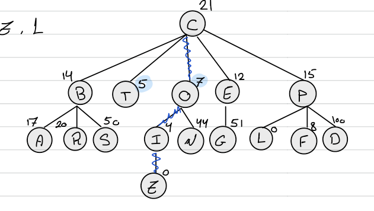
k = 2 toward goal Z; the highlighted path is the solution C → O → I → Z. (From the course notes.)We track two lists: Open (nodes still to expand, capped at k = 2) and Closed (already expanded).
| Step | Expand | Open (best 2) | Closed |
|---|---|---|---|
| 0 | — | [C] | [ ] |
| 1 | C → B14, T5, O7, E12, P15 | [T5, O7] | [C] |
| 2 | T (a leaf, no children) | [O7] | [C, T] |
| 3 | O → I4, N44 | [I4, N44] | [C, T, O] |
| 4 | I → Z0 | [Z0, N44] | [C, T, O, I] |
| 5 | Z is the goal ✓ | Solution path: C → O → I → Z | |
At every step the Open list is trimmed back to the two lowest-valued nodes, so weak branches such as B, E and P are dropped immediately after C is expanded. Follow the surviving nodes and the path C → O → I → Z emerges — the goal is reached without ever expanding most of the tree.
A genetic algorithm (GA) is a search heuristic developed at the University of Michigan in the 1970s (John Holland), inspired by Darwin's theory of natural evolution. It mimics natural selection: the fittest individuals of a population are chosen to reproduce, passing their traits to the next generation. Instead of improving one state, a GA evolves a whole population of candidate solutions, generation after generation, until it converges on a global optimum.
x₁, x₂, x₃).[x₁ | x₂ | x₃].Say we must solve 2x₁ + 3x₂ + 4x₃ = 40, i.e. drive f = 2x₁ + 3x₂ + 4x₃ − 40 to 0. The genes are x₁, x₂, x₃. An initial population is generated at random — each chromosome is just a guess:
| Chromosome | x₁ | x₂ | x₃ | Binary encoding (alternative) |
|---|---|---|---|---|
C₁ | 9 | 10 | 1 | 1001 1100 1000 |
C₂ | 2 | 3 | 4 | 1010 1001 111 |
C₃ | 5 | 6 | 7 | … |
Chromosomes can be encoded as integers or as binary strings — binary makes the crossover and mutation operators especially simple, as we will see.
We keep producing offspring (“spring”) generation after generation until the population reaches the global optimum — or we accept the best local solution found. The fitness function determines how fit each individual is: its fitness score ranks it against the rest.
For f(x) = 2x² + 3x − 44 the goal is f(x) = 0. Trying x = 3, 6, 7, 4 gives fitness values −17, 46, 76, 0. The value nearest zero is the best fitness — here x = 4 gives exactly 0, so it is the fittest (in fact an exact solution). This "distance from the target" is precisely what selection will reward.
How do we pick which chromosomes get to reproduce? Four common techniques:
In roulette-wheel selection each chromosome's selection probability is its fitness divided by the total fitness, and the cumulative probabilities carve the wheel into slices. Spinning a random number in [0, 1) lands in one slice — fatter slices (fitter chromosomes) are hit more often.
| Chromosome | Fitness | Selection prob. | Cumulative |
|---|---|---|---|
A | 10 | 10/50 = 0.20 | 0.20 |
B | 20 | 20/50 = 0.40 | 0.60 |
C | 15 | 15/50 = 0.30 | 0.90 |
D | 5 | 5/50 = 0.10 | 1.00 |
| Total | 50 | 1.00 | — |
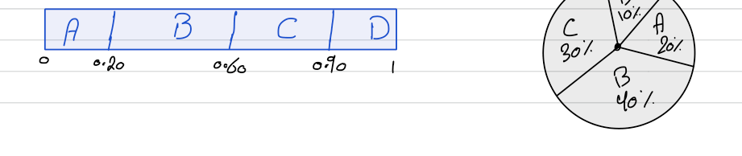
[0, 1] (cut at 0.20, 0.60, 0.90) and as a pie: A 20%, B 40%, C 30%, D 10%. A spin of, say, 0.75 falls in C's slice. (From the course notes.)Crossover creates new individuals by combining parts of two selected parents. Two parents go in, two offspring come out. The common types:
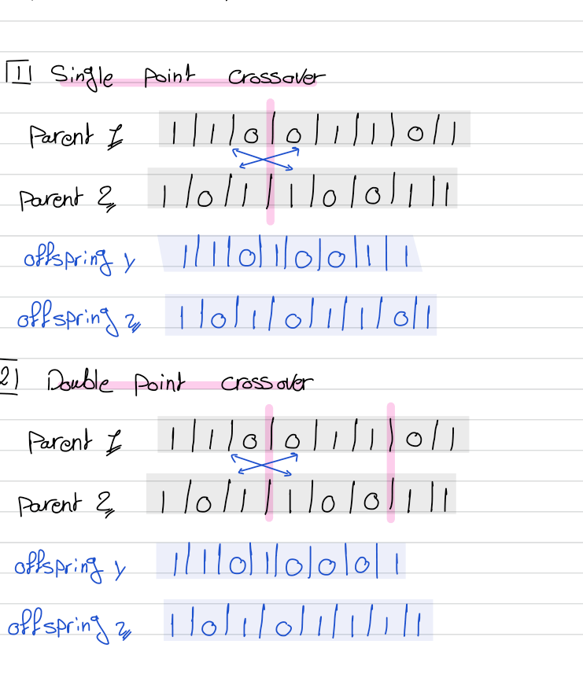
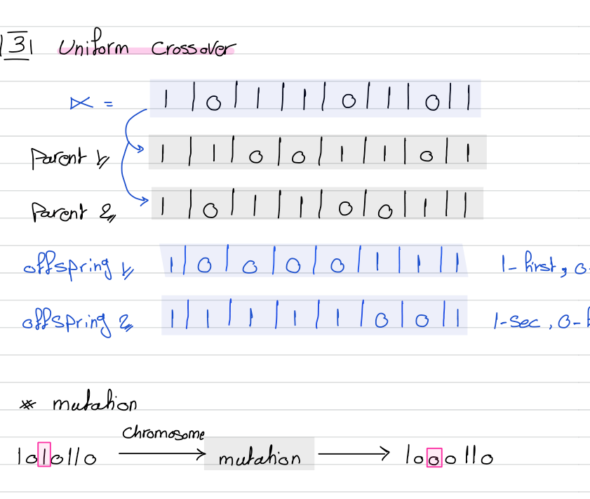
α decides, gene by gene, which parent each offspring inherits from. Mutation: flip a random bit of a chromosome (1010110 → 1000110). (From the course notes.)After crossover, mutation randomly alters a gene — flipping a bit in a binary chromosome, or nudging an integer. It happens with low probability, but it is essential: it injects fresh genetic material so the population does not prematurely converge and get stuck on a local optimum. Crossover exploits what the population already knows; mutation explores beyond it.
Tabu search is a high-level meta-heuristic. Like the others it uses an iterative-improvement strategy — start from a random initial solution and keep moving to a better one — but it adds memory. Plain local search can get stuck on a local optimum, or worse, cycle back and forth between the same few states. Tabu search forbids recently visited moves so the search is forced to explore somewhere new. Together with genetic algorithms it is widely regarded as one of the most promising methods for hard practical problems.
A meta-heuristic sits above a basic search and steers it — imposing constraints that trade completeness for speed. It uses less time than an exhaustive search, but the constraints may cause it to miss the very best path. That is the bargain: good solutions fast, without a guarantee of the optimum.
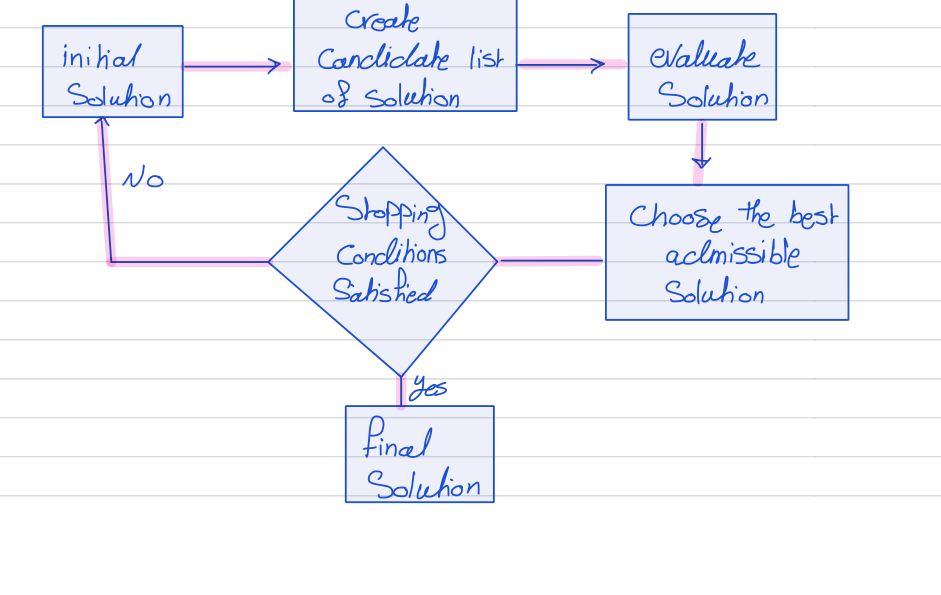
Xjcurrent — the optimised solution of n parameter values at iteration j.A perfect setting for tabu search is the constrained minimum spanning tree. First, the plain version.
A spanning tree of a graph is a subgraph that includes all the vertices, is connected, and has no cycle (it is acyclic). It always has exactly |edges| = |vertices| − 1. A graph is connected when, from every node, you can reach every other node. The minimum spanning tree (MST) is the spanning tree of least total edge cost.
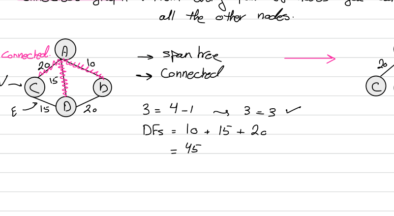
4 − 1 = 3 edges, all connected, no cycle. (From the course notes.)Kruskal's algorithm builds the MST greedily: sort the edges by cost, then add the cheapest edge that does not create a cycle, repeating until the tree spans every vertex.
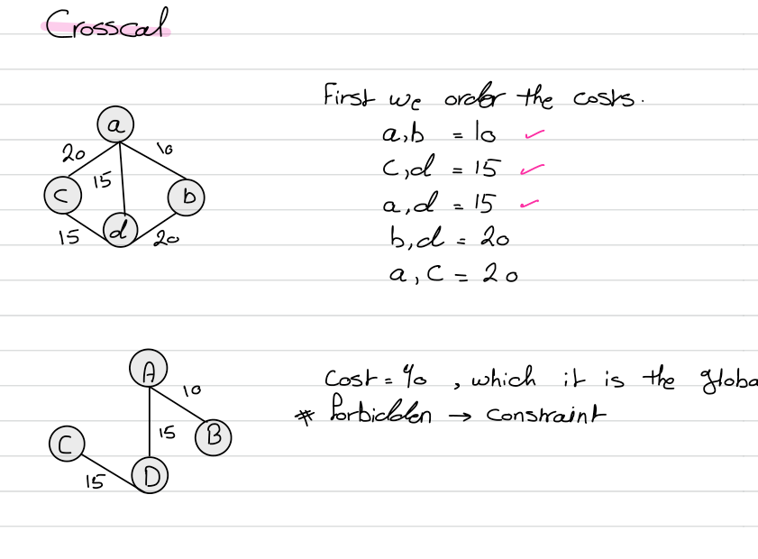
Kruskal finds the cheapest tree, but real networks come with side constraints that a greedy build cannot honour. Consider this graph with edge costs AB=20, BE=30, AC=10, CE=5, AD=15, CD=25, DE=40, plus two rules enforced by penalties added to the cost:
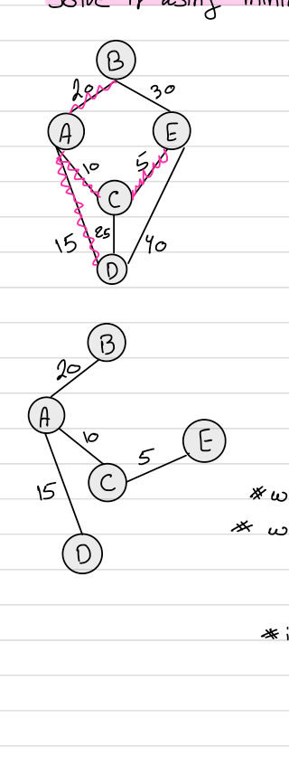
AD may be included only if link DE is also included — otherwise a penalty of 100.AD, CD, AB may be included — penalty 100 if two of the three are selected, 200 if all three.Without any constraint the MST costs AC(10) + CE(5) + AB(20) + AD(15) = 50 — the true global optimum. But that tree includes AD without DE (breaks Constraint 1) and includes two of {AD, AB} (Constraint 2), so its real cost with penalties is much higher. The initial solution shown scores 250. Tabu search now improves it step by step.
Generating candidates. To change a spanning tree you add one edge — which creates a cycle — and delete one edge from that cycle to restore the tree. Each add/delete pair is a candidate move; we score all of them (base cost + penalties) and pick the best admissible one.
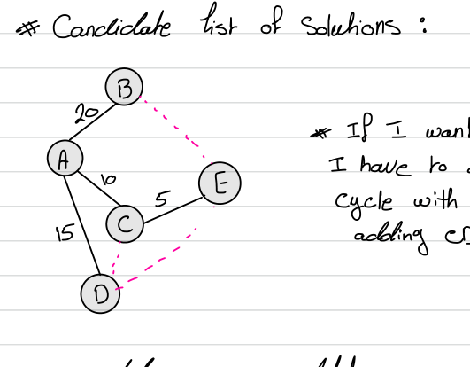
| Add | Delete | Cost = base + penalties |
|---|---|---|
BE | CE | 75 + 100 + 100 = 275 |
AC | 70 + 100 + 100 = 270 | |
AB | 60 + 100 + 0 = 160 | |
CD | AD | 60 + 100 = 160 |
AC | 65 + 100 + 200 = 365 | |
DE | CE | 85 + 100 + 0 = 185 |
AC | 80 + 100 + 0 = 180 | |
AD | 75 + 0 + 0 = 75 ✓ admissible |
The best admissible candidate is add DE, delete AD, scoring 75 with zero penalties: DE is now in (so AD's Constraint 1 no longer applies) and only one of {AD, CD, AB} remains (Constraint 2 satisfied). This tree (AB, AC, CE, DE) becomes the new current solution. Cost 75 is a local optimum, so the search will iterate again — and crucially, if an already-visited solution reappears it is forbidden and added to the tabu list, guaranteeing the search cannot cycle back.
Three problems, one per method. Work each on paper before revealing the solution.
The current state has value 50. A randomly chosen neighbour has value 46, so ΔE = −4 (a downhill move). Should simulated annealing accept it? Compute the acceptance probability eΔE/T at a hot temperature T = 8 and a cool temperature T = 1, and explain what the two numbers tell you.
Because ΔE = −4 < 0 the move is not automatically accepted; it is taken only with probability eΔE/T.
T = 8: e−4/8 = e−0.5 ≈ 0.61 — a 61% chance of accepting. When hot, even a fairly bad move is likely taken.T = 1: e−4/1 = e−4 ≈ 0.018 — under a 2% chance. When cool, the same bad move is almost always rejected.This is the whole point of the cooling schedule: early on (hot) the search explores freely and can climb out of local optima; later (cool) it commits, behaving like greedy hill climbing. Note also that a worse move — say ΔE = −20 — would give e−2.5 ≈ 0.08 even at T = 8: the bigger the drop, the less likely the acceptance.
Solve 3x₁ − 2x₂ + 4x₃ + 5x₄ = 82 with genes constrained to 0 ≤ xₕ ≤ 9. Fitness is the error |3x₁ − 2x₂ + 4x₃ + 5x₄ − 82| (so 0 is a perfect solution). Using the population below: (a) verify the fitness values, (b) compute each chromosome's selection probability Fₕ/ΣF and the cumulative probabilities, and (c) do a single-point crossover (cut after gene 2) of parents E and B.
| Chromosome | x₁ | x₂ | x₃ | x₄ | Fitness |
|---|---|---|---|---|---|
A | 4 | 5 | 3 | 8 | 28 |
B | 3 | 7 | 8 | 2 | 45 |
C | 7 | 6 | 5 | 9 | 8 |
D | 9 | 4 | 2 | 6 | 25 |
E | 2 | 1 | 5 | 7 | 23 |
F | 3 | 8 | 0 | 9 | 44 |
(a) Verify fitness — plug into |3x₁ − 2x₂ + 4x₃ + 5x₄ − 82|:
A: 12 − 10 + 12 + 40 = 54; |54 − 82| = 28 ✓B: 9 − 14 + 32 + 10 = 37; |37 − 82| = 45 ✓C: 21 − 12 + 20 + 45 = 74; |74 − 82| = 8 ✓ (fittest)D: 27 − 8 + 8 + 30 = 57; |57 − 82| = 25 ✓E: 6 − 2 + 20 + 35 = 59; |59 − 82| = 23 ✓F: 9 − 16 + 0 + 45 = 38; |38 − 82| = 44 ✓(b) Selection probabilities. Total fitness ΣF = 28+45+8+25+23+44 = 173. Dividing each by 173 and running the cumulative sum:
| Chromosome | Fₕ/ΣF | Cumulative |
|---|---|---|
A | 28/173 = 0.162 | 0.162 |
B | 45/173 = 0.260 | 0.422 |
C | 8/173 = 0.046 | 0.468 |
D | 25/173 = 0.145 | 0.613 |
E | 23/173 = 0.133 | 0.746 |
F | 44/173 = 0.254 | 1.000 |
These cumulative cut-points (0.162, 0.422, 0.468, 0.613, 0.746, 1.0) are the roulette-wheel slices: a random spin lands in exactly one chromosome's interval. (Note: because fitness here is an error we want to minimise, a practical GA would select on an inverted score so that low-error chromosomes get the fat slices; the mechanics of computing the wheel are identical.)
(c) Single-point crossover of E and B, cut after gene 2:
E = (2, 1 | 5, 7), B = (3, 7 | 8, 2)A subsequent mutation might then flip one gene of an offspring (e.g. the first gene) before it re-enters the population for the next round of evaluation.
In the constrained-MST example, from the initial tree the candidate move “add DE” can break its cycle by deleting CE (cost 185), AC (cost 180), or AD (cost 75). Which of the three do you choose, and why is its penalty zero? What role does the tabu list play afterwards?
Choose add DE, delete AD — cost 75, the lowest of the three (and the best admissible move in the whole candidate list).
Its penalty is zero because both constraints are now satisfied:
AD entirely, so the rule cannot be violated — no 100 penalty.AD gone, only AB remains from that trio — one link, so no penalty.The other two options keep AD in the tree, so they still carry the 100 penalty from Constraint 1 (hence 185 and 180). After committing to the cost-75 tree, the search continues from there; should a previously visited solution resurface as a candidate, it is declared tabu and added to the tabu list, which stops the search from cycling back to a local optimum it has already left.
eΔE/T, cooling from exploration to exploitation; slow cooling → global optimum with probability → 1.k nodes at each level — O(B·m) time and space, complete/optimal: no.Local search builds on the systematic search of Modules 4–6, trading path-finding for the optimisation of a final configuration. Next comes Module 8: Adversarial Search & Games — searching when a second, hostile agent is making moves too. After that the syllabus turns to knowledge and reasoning — knowledge representation, logic and inference, and then machine learning — where the question shifts from "how do we search?" to "how do we represent what we know and draw conclusions from it?"